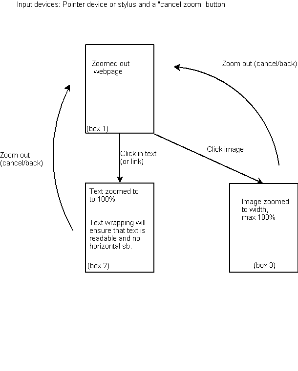
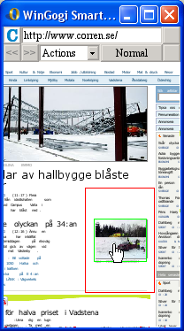
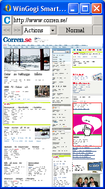
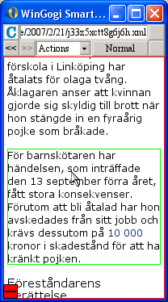
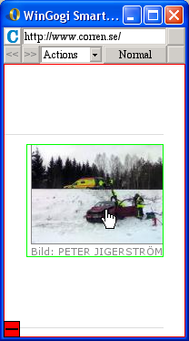

![Opera]()
Adaptive Zoom - simple mode
Table of Contents
About This Document
Disclaimer
The material, including but not limited to all software, design, drawings,
technical specifications and other confidential information sent to you
("Material"), is the exclusive property of Opera Software ASA.
The Material is classified as strictly confidential information and is
internationally protected by copyright-, trademark- and other such laws.
The Material is sent to you for internal use only and shall only be used
as expressly instructed by Opera Software.
Any copying, reproduction, modification or distribution not in accordance with a special written license agreement with Opera Software is expressly prohibited, and may result in severe civil and criminal penalties. Opera Software actively and aggressively enforces its intellectual property rights to the fullest extent of the law.
Changelog
| Date | Version | Status | Changes & comments | By |
| 2007-02-20 | v0.1 | Initial draft | Breaking this mode out to its own document | MG |
| 2007-02-22 | v0.2 | Draft | First draft version | MG |
| 2007-05-23 | v0.3 | Draft | Updated according to input from meeting and mail discussion. Added definitions chapter and changed interaction schemes somewhat. | MG |
Adaptive zoom
Purpose
The purpose of this document is to provide a specification for the first level of implementation of the adaptive zoom feature.
This model is based on the precondition that text-wrapping is an acceptable default layout mode.
Other methods which does not rely on text wrapping are being considered, but will probably have negative implications on the simplicity of the model.
The specification takes its stance in a model for a typical mobile phone, since this is likely the most restricted environment we deliver on. Possible deviations from this model is listed in the Possible deviations chapter.
Introduction
Definitions
- Area of interest
- An area identified as a position we want to put in focus. May be smaller than the screen.
- Visible area
- Currently visible area of the document
- Target visible area
- Potential visible area with the current area of interest in center.
- Virtual framebuffer
- Same as gogi buffer. Size of the virtual screen.
- TextWrap
- Wrapping the text to the size of the window.
Figure 1 Definitions
Specification
This mode specifies the simplest interaction and it relies on text-wrapping to work properly and be on by default.
The obvious advantages with this model it that it is very simple and thus easy for a new user to grasp.
We use two basic modes (and one extra image zoom mode); zoomed out to overview and zoomed in to readable block size. Text wrapping is enabled to ensure that the text is readable in zoomed in mode. 
Figure 2 Flowchart for basic adaptive zoom interaction.
Zoomed out mode (box 1)
When the user has loaded the page, (s)he is first presented with the zoomed out mode. This mode shows as much of the page as possible.
TBD - Should this provide a specified zoom level (40-70%) or should the entire width of the screen be shown?
When the user moves the pointer around on the screen, the currently hovered area of interest is highlighted by a rectangle. This rectangle can be replaced by a more advanced/more eye candy method if the device has the capability. This is currently supported by the adaptive zoom API to the platform.
TBD - We want to try out a couple of different methods here. We may also want to highlight the target visible area that is going to be zoomed in. Question is if should show both rectangles or only one? 
Figure 3 Example of zoomed out mode, with two highlights limiting the zoom out level to min 40%. The red rectangle shows the target visible area in and the green rectangle shows the currently highlighted area of interest. 
Figure 4 Another example of zoomed out mode where the screen is zoomed out to the document width. This gives the user a better overview of the page, but makes the titles in the page unreadable and the page will have a lower resolution while zooming in.
Zoomed in mode (box 2)
When the user presses the action/select key, the currently highlighted area of interest is zoomed in to 100% in smooth steps, which will present the user with a readable text without horizontal scrollbar, because the text is wrapped to the width of the physical screen.
In this mode the user can select and follow links. (See also possible deviations.)
This mode is cancelled by pressing the back or cancel key, or a softkey on the screen if the device is using a stylus. 
Figure 5 Example of zoomed in text.
TBD - what exactly do we choose to zoom in, text under mouse pointer or to the top of the area of interest block. There are also some technical limitations to how we choose this in order to maintain performance and save memory.
Zoomed in image (box 3)
If the user clicks an image from the zoomed out mode, the image will be zoomed to the image width, but max 100%.
If the image is a link, it is now clickable. (See also possible deviations.)
This mode is also cancelled by pressing the back or cancel key, or a softkey on the screen if the device is using a stylus. 
Figure 6 Example of zoomed in image (100% level reached).
Implementation details
Area of interest recognition
The area of interest recognition algorithm should be tuned to only find the relevant text or image boxes that are below the mouse pointer without catching boxes used as containers, and without catching too small boxes.
Key interaction
Key interaction may vary depending on the input device. Typically if the input device has many easily reachable buttons we may choose to combine zoomed out mode and zoomed in mode into the same interaction using a dedicated zoom key. (See also possible deviations.)
The table below shows a recommended user interaction on a typical cell phone.
| Mode/key | Left softkey | Right softkey | Direction key press | Direction key hold | Action key (joystick) |
|---|---|---|---|---|---|
| Box 1 (zoomed out) | Menu | Back (history) | Scroll step direction | Continuously scroll direction | Zoom in |
| Box 2 (zoomed in) | Menu | Go to zoomed out mode | Scroll step direction. | Continuously scroll direction (alternatively scroll-zoom) |
|
| Box 3 (zoomed in image) | Menu | Go to zoomed out mode | Scroll step direction | Continuously scroll direction (alternatively scroll-zoom) |
|
Text wrap
aka "NSR - light", "MSR-light", "limt paragraph width"...
Text wrap works without affecting the layout width of containers and tables, by simply telling text lines to break when they get wider than the screen. In the case of zoomed out mode when they would have become wider than the screen is in 100% zoom mode. So the structure is not changed between zoomed out and zoomed in mode.
Some enhancements to text wrap are under development. Text larger than 24px will not break and also incorporating float widths into the paragraph width is taken into consideration, even though this will have to be carefully implemented since many layout structures are based on floats. See also documentation under modules/layout/documenation/text_wrap.html
Stylus interaction
Stylus interaction provides some special challenges, since there is no explicit mouse cursor that shows what will happen before it happens. It is for example not possible to show beforehand what is going to be zoomed in.
Our suggestion is to add a delay (0,5 - 1,5s) before zooming in, that will show what will be zoomed in, and also give the user a chance to interrupt the zooming during this time with a stylus stroke.
History navigation
This mostly applies to mobile phones. Preferrably it should be possible to use the back (right) softkey on a mobile phone to also double as a zoom out key. This is because the zoom out key needs a prominent placement in this model, and zoom out is conceptually rather similar to back.
TBD Should moving back in history go back to the last zoomed in position or a zoomed out position?
TBD Should moving forward in history go to the last zoomed in position or a zoomed out position?
Scrolling enhancements
There are a couple of enhancements that could go along as extensions to this mode when it comes to scrolling.- Scrolling snapped to container
- Scrolling the zoomed in page could be enhanced to add gravity to snap to a neighboring area of interest.
- Scroll-zoom
- If the user is holding the scroll key while in zoomed in mode, the user is not unlikely looking for a better overview of the page. So a press and hold scroll could be combined with a smooth zoom-out action.
Possible deviations
The base for this specification is modeled on a mobile phone, although usable in other environments.
In for example a TV environment some conditions change compared to a mobile phone
Interaction model
With a larger screen and more buttons available it may be possible to dedicate a special button for zooming. This button combined with a larger screen can make it unnecessary to have different interaction models for zoomed in and zoomed out mode. I.e. links may be clickable also in zoomed out mode.
A dedicated zoom button can also be used to get a stepless zoom feature when long-clicking this button.